DomainModel.stream()
DomainModel.stream()
Welcome to the Furets !
@gdigugli – Gilles Di Guglielmo
- Designer of sweet cooked software since 1999
- Software Architect at LesFurets.com
@jubaudry – Julien Baudry
- Java Developer since 2007
- Software Architect at LesFurets.com

- 1 website, 5 Insurance Products : Car, Health, Home, Bike, Loan
- 1 codebase, 450k lines of code, 60k unit tests, 150 selenium tests
- 22 Developers, 2 DevOps, 3 Architects
- 10+ production servers
- 1 release per day
- 7 years of code history
- 2.5M quotes/year, 31% of market share
Domain Model, what do you mean ?

Moving the architecture
Architecture Buzz
- Copy on write
- Immutable data
- NoSQL
- Clustered Data Base
- Data streaming
- Micro batching
- Lambda architecture
- Data on demand
What you have ...
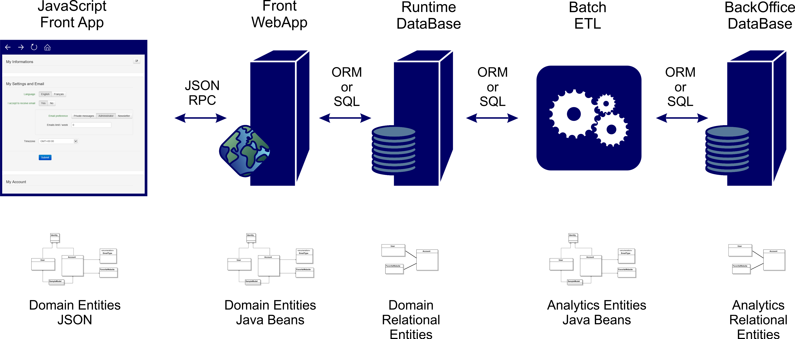What you want …

You are in trouble ...
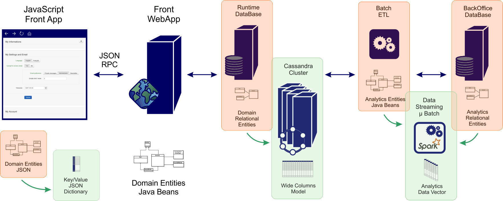Front app evolutions
- Your domain model is cloned using two different languages.
- Governance of the domain model and change requests are difficult to implement.
- Development owners of the server and front application are different.
- UI Spaghetti code.

Front storage evolutions
- Mapping entities in Cassandra is painful.
- Don’t migrate your Entity/Relation model using cut & paste!
- You should probably flat your domain model to fit a single row.
- Infinite storage.
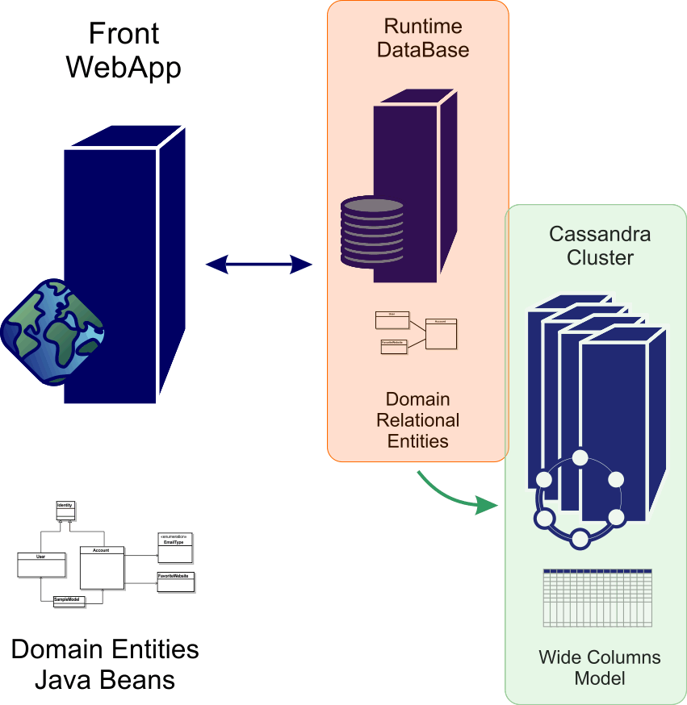
BackOffice evolutions
- A lot of rework to implement.
- Spark and ML-lib love data vectors.
- Spark read raw data, aggregate, write them in microbatches.
- No more (very long) nightly batches.
- Full history is available for custom computations.
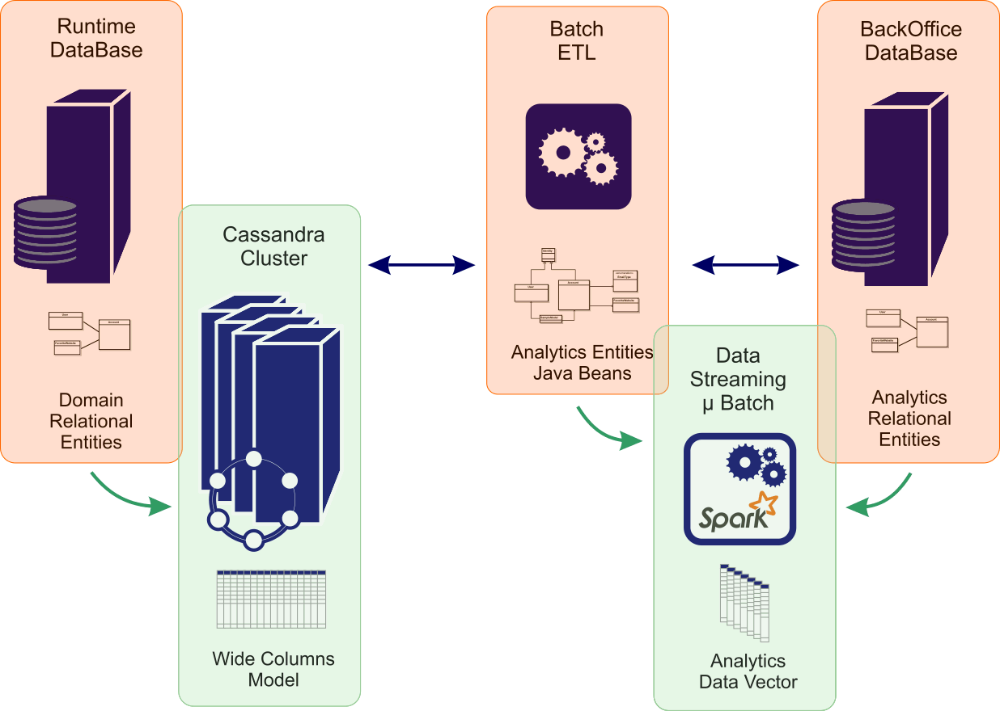
What we do now ?
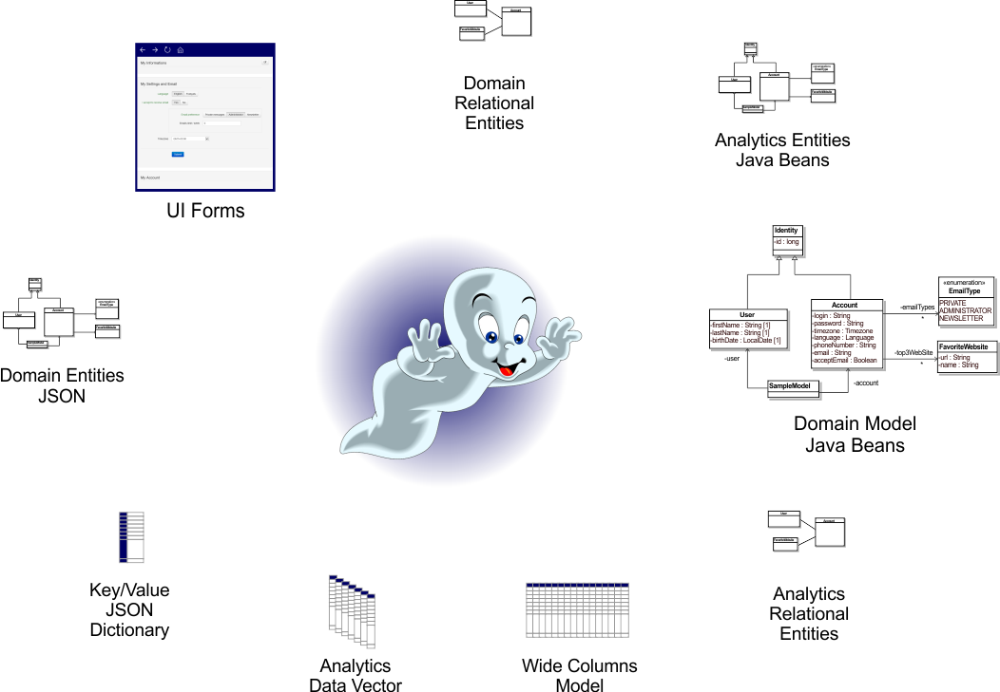Add keys everywhere !
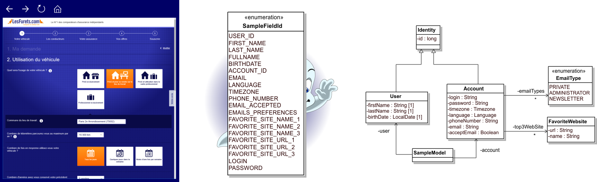A bit of decoration
Let's start with this model...
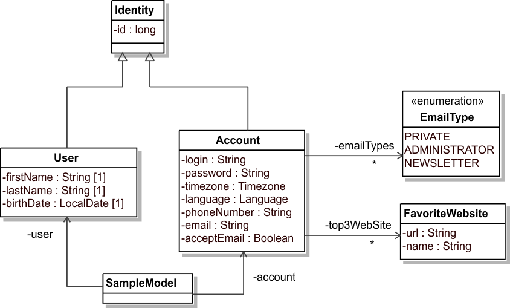... and transform it to a key-value model
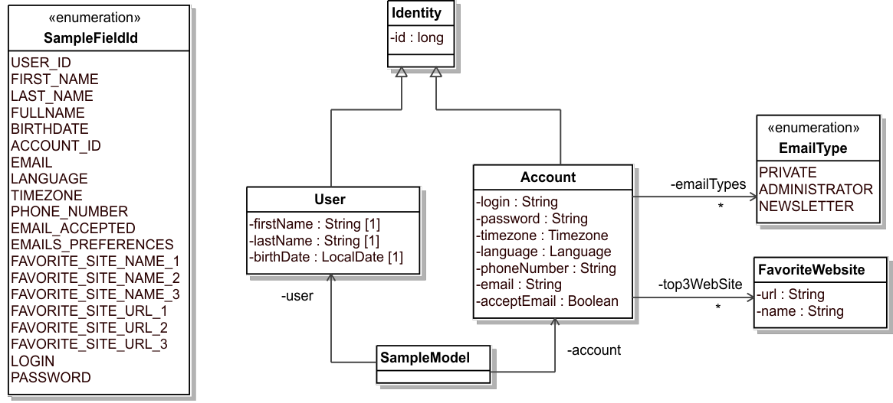User model
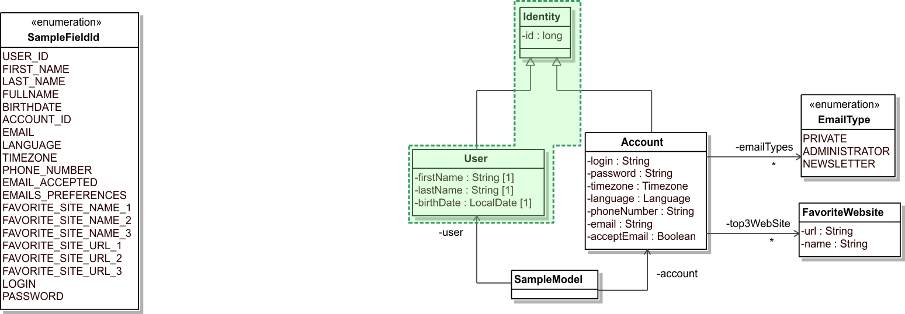User model
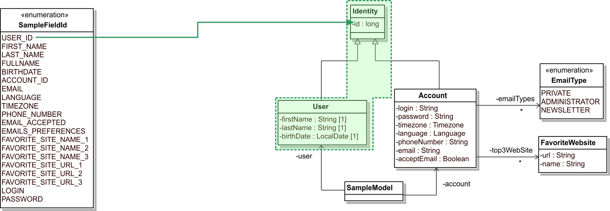User model
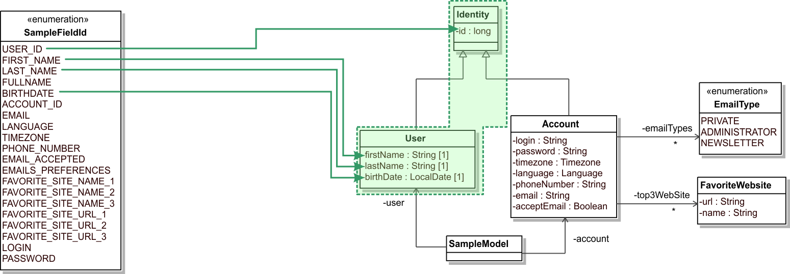Account model
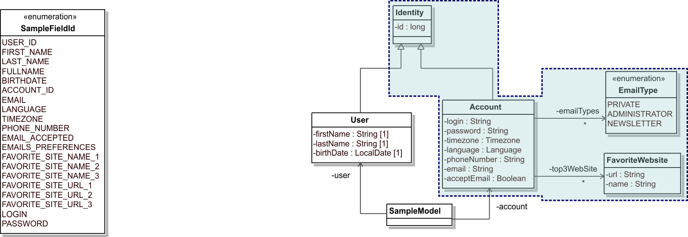Account model
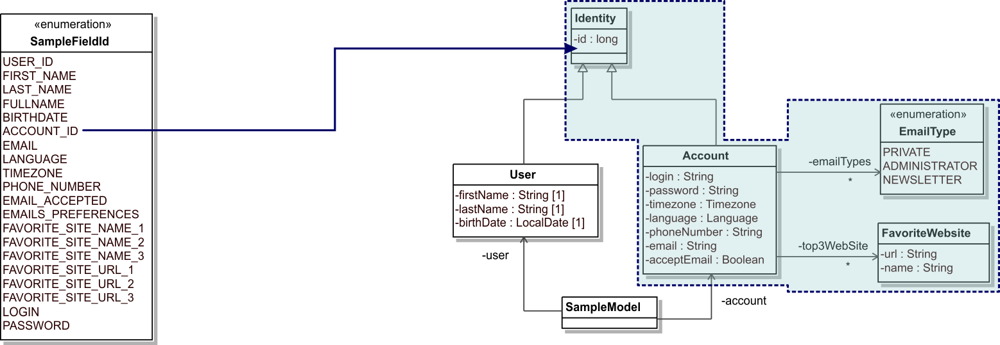Account model
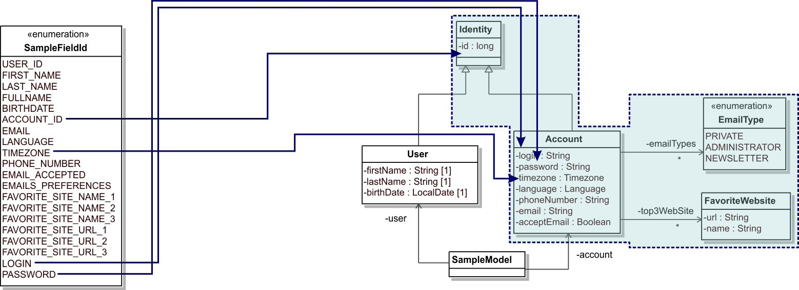Account model
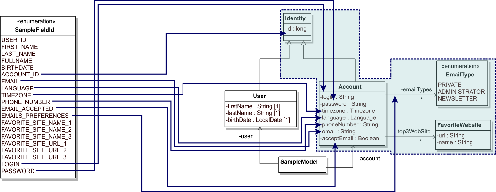Account model
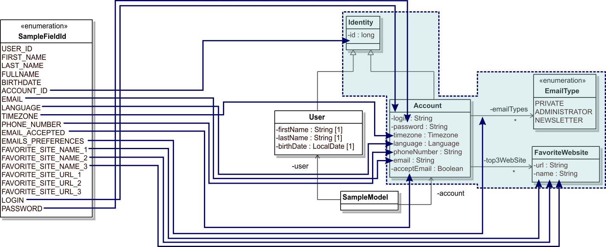From domain model to key-value model
- Step 1 : create one Enumeration with all keys
- Step 2 : annotate your domain model
- Step 3 : generate the key value model
Let's see the domain model & the key-value model
Step 1 : one Enumeration with all keys
- one literal for each key
- position (optional) : used when collections are denormalized
- tag (optional) : used to add meta-information
Step 2 : one Annotation to annotate the domain
- one method to retrieve the FieldId
- one method to retrieve the Constraint
Step 3 : annotate your domain model
- attribute, getter or setter can be annotated
- getter and setter must follow Java naming conventions

Step 4 : generate the key value model
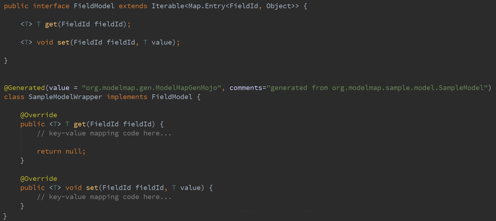... Just one little issue.
Account & User ID
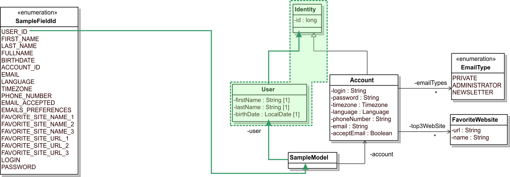sampleModel.getUser().getId()
Account & User ID
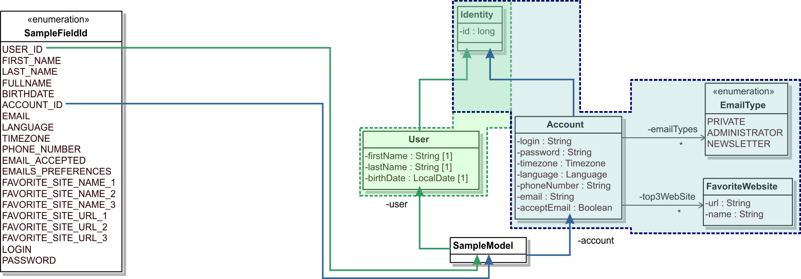sampleModel.getAccount().getId()
Many key for a single attribute
- Each key must have a unique path to retrieve its value
- How to retrieve the right value for each field?
- getAccount().getId()? getUser().getId()?
Solution : constraints
One for each field, specify which getter to use

Add a constraint for each annotation
- the code generator only use the path with the specified getter
- each field is now mapped correctly

Let the magic begin ...
Code generator under the hood
- Execution is done using a maven plugin
- Annotated properties are processed using Java Reflection
- Generate handwritten style code, easy to read
- Enable JIT optimisations by combining lambdas and enumerations
- Lightweight pattern, designed for performance
Generation output (1/3)
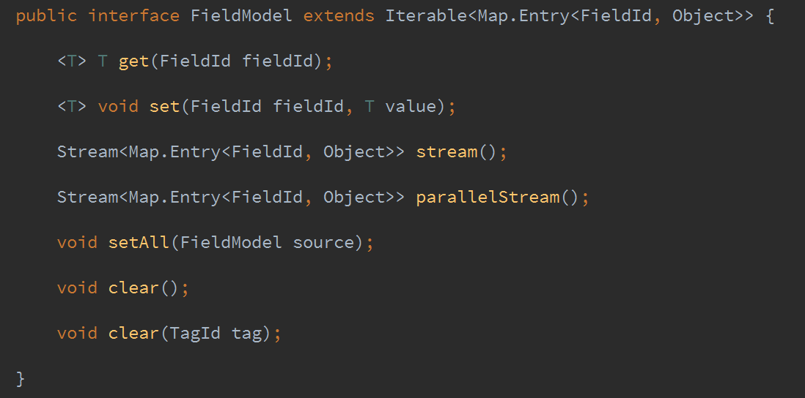Generation output (2/3)
An Enumeration containing metadate : type, generics type
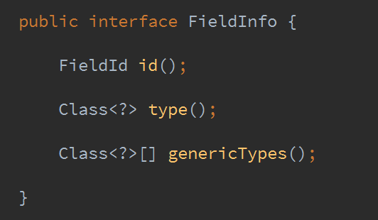Generation output (3/3)
a CSV containing each field, path, and value type
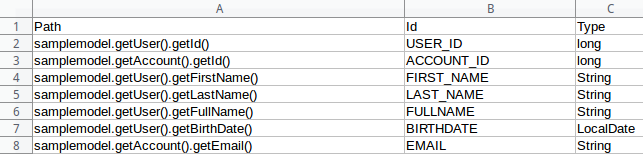Usages are unlimited
You can use Java 8 stream on your Domain Model !
- FieldModel#stream() : a stream of key/value pair (FieldId/Object)
- FieldModel#parallelStream() : parallel stream and better performance
- Easy use a filter/map/reduce operations on a domain model
Could you write a domain model diff tool now ?
Where we use it at LesFurets.com
- Simple UI binding by replacing JSON model by a Dictionary (80% less code)
- Use JSON Dictionary for client/server RPC
- Batch and ETL with an email provider (90% less code)
- Persistence in cassandra (from scratch with 200 lines of code for a whole model)
- Injecting user data in selenium (40% less code)
- Mocking our domain model in thousand of unit tests
... everything in iterative fashion during the past 2 years.
Future and ideas
- Push as OSS our Cassandra serialisation code
- Push some Spark samples
- JEP 276: Dynamic Linking of Language-Defined Object Models
Model-Map available on Github
- http://github.com/lesfurets/model-map
- Framework and examples
- Apache Licence
- Try it and contribute !
Thank You!